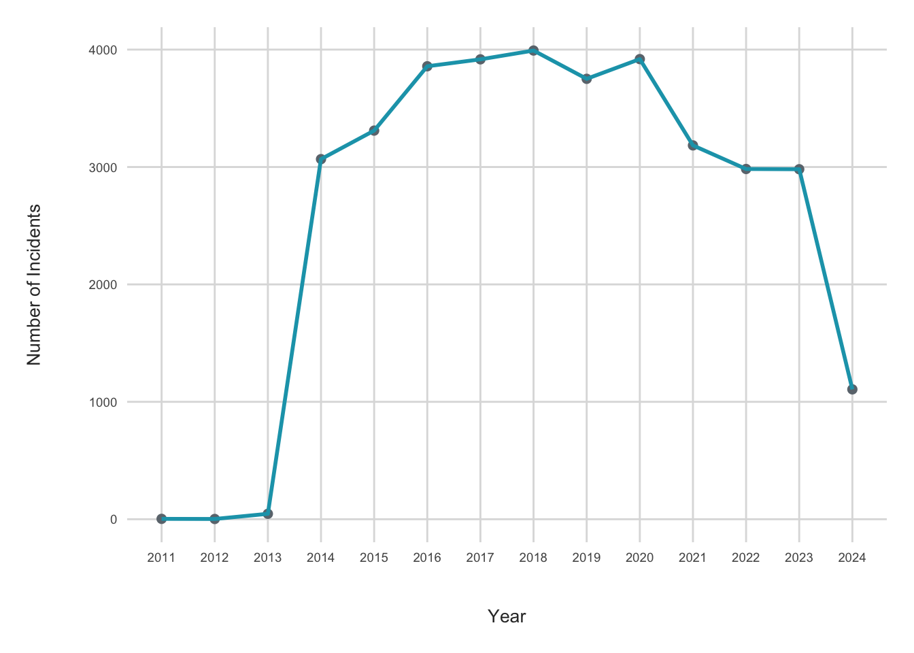
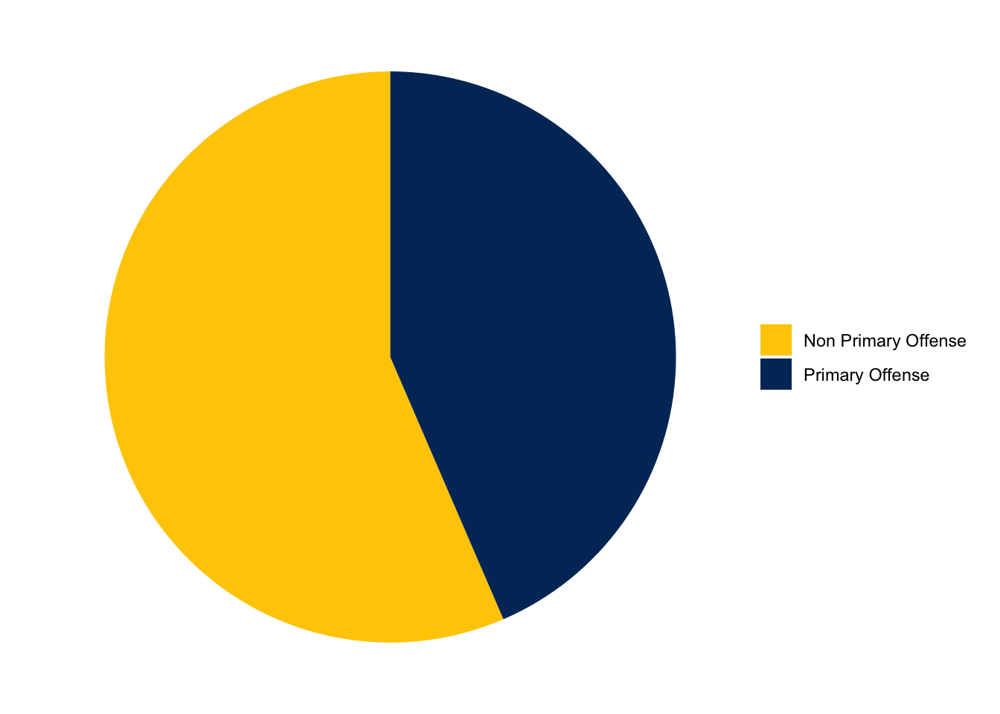
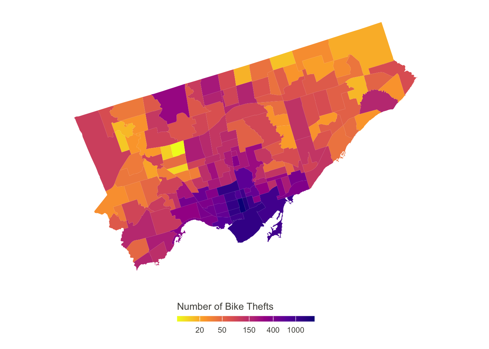
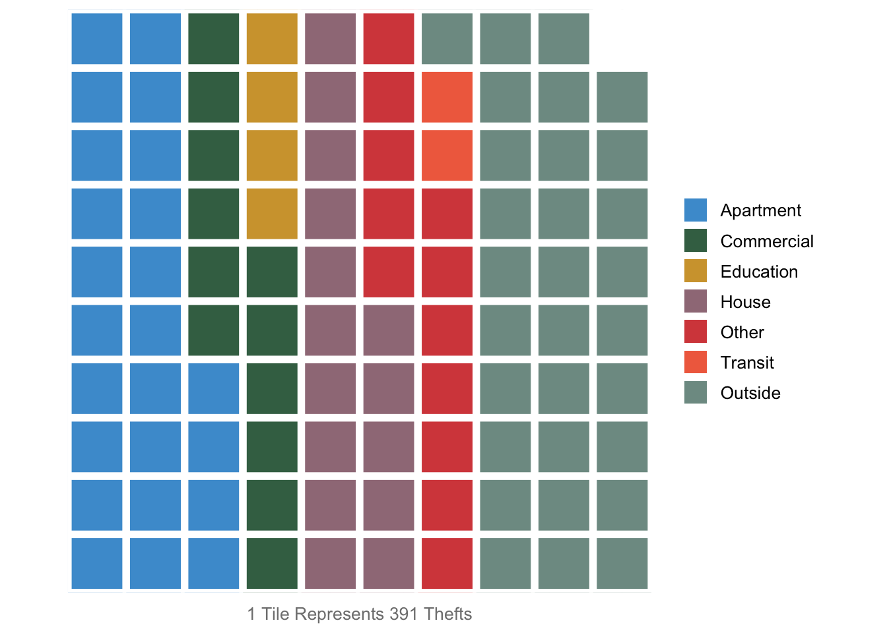
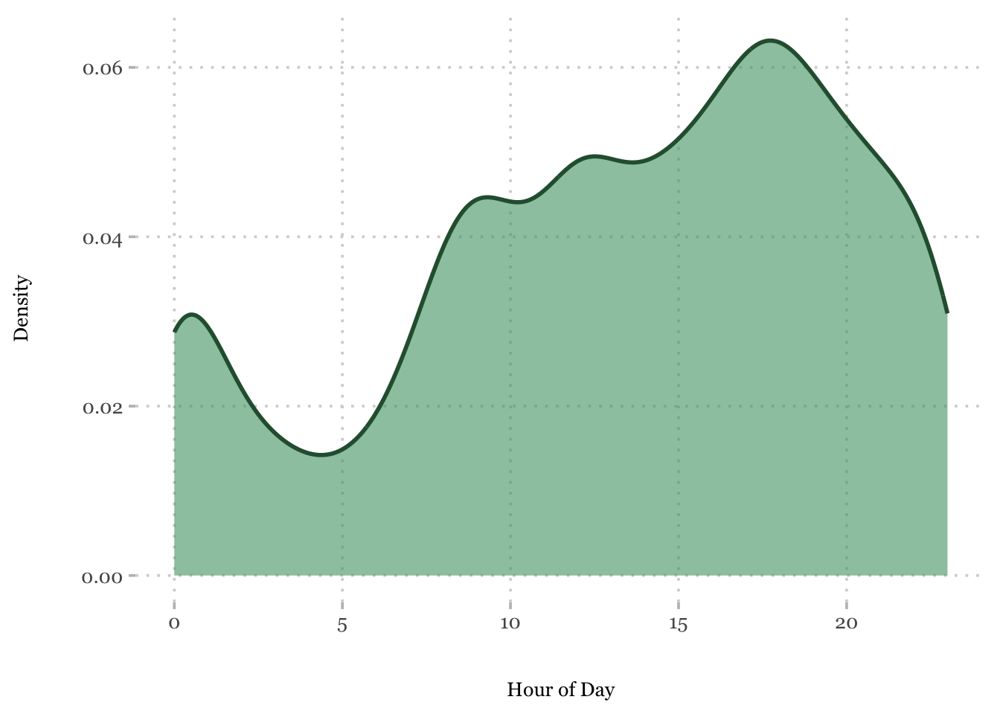

How Toronto Achieved a Historic Decline in Bicycle Theft in 2024
1 Introduction
In the past decade, cycling has become a prominent mode of transportation in Toronto. By 2019, around 75 percent of households in the city owned a bicycle, and more than 40% of people reported using their bike for non-recreational purposes such as commuting to school or the office (City of Toronto 2019). Despite being the safest city in Canada due to its low crime density (Mazloum 2024), bike theft is a significant issue. Between 2010 and 2024, residents of Toronto faced a total financial loss of $33,704,466 CAD from bike theft.
Although 2024 has seen the lowest number of bike thefts since 2013, as shown in Figure 1, the recovery rate for stolen bikes remains low at 0.7 percent, making bike theft prevention a priority for cyclists. This analysis aims to serve as a preventative guide for Toronto residents and explores the following questions: Why did bike theft drastically increase in 2014? Why did bike thefts experience a historical decline in 2024? What initiatives can Toronto Public Services take to reduce bike theft even more in the future?
2 Characteristics of Stolen Bikes
Based on data from Toronto’s Public Safety Data Portal, we determined that Mountain and Regular Bikes are stolen most often. Stolen bikes tend to have an average speed of 21 km/h and a typical market value of around $1,000. Black bikes make up a significant majority of thefts, likely due to their inconspicuous nature, especially at night, as well as their widespread availability in the market. The majority of all bike thefts are tied to other primary offenses, where the bike is either used as a getaway vehicle or stolen opportunistically. Around 44% of thefts are standalone incidents where bike theft is the primary crime as seen in Figure 2.

3 Spatial Distributions of Bike Theft
As shown in Figure 3, the Yonge-Bay Corridor has the highest number of bike thefts in Toronto, with 2,141 recorded thefts since 2010. In contrast, the Maple Leaf area has experienced the fewest thefts, with only 8 incidents over the same period. The Yonge-Bay Corridor is characterized by a population in which 51% are adults aged 25 to 54. The largest income group in the area earns less than 10,000 CAD, accounting for 30% of the population aged 15 and over. Additionally, 98% of residents live in apartments (City of Toronto 2016a). In comparison, Maple Leaf has a population approximately half the size of Yonge-Bay. 46% of its residents live in single-detached homes, and 40% of the working population earns between 20,000 and 50,000 CAD (City of Toronto 2016b).
According to Figure 4, apartments are more vulnerable to bike thefts compared to detached homes. Therefore, it is not surprising that the Yonge-Bay Corridor experiences higher rates of bike thefts. Additionally, the potential of selling stolen bicycle parts may provide a significant financial incentive to some residents, given the high levels of poverty in the region.
Bike thefts occur more often near apartments since apartments often have communal bike storage areas which may not be as secure as individual garages in detached homes. In fact, in a 2018 article, it was written that “for the first time since Toronto police began collecting data, the number of bikes stolen from apartments, condos and their private storage rooms has surpassed those stolen on the street (Lysecki 2018).” Such areas are also easily accessed by multiple residents and increase the chances of theft occurring.

From 2010 to 2024, most bike thefts have occurred in outdoor areas, such as parks, hiking trails, and streets. These locations are particularly vulnerable due to the lack of dedicated bike storage infrastructure. In contrast, transit areas and educational institutions experience significantly lower rates of bike theft, as shown in Figure 4. These areas often offer secure bike racks or lockers, which provide cyclists with a place to lock their bikes. Additionally, these locations tend to attract higher foot traffic, which can deter potential thieves.

4 When are Bike Thefts most Prevalent?
The data shows that bike thefts are more often in urbanized and dense areas where there is both an abundance of bikers and foot traffic. With increased foot traffic, thieves are more easily able to blend in with their surroundings compared to isolated areas; moreover, the sheer number of bikes in urban areas naturally leads to more instances of thefts in general.

This being said, from the above figure, we can see that the number of thefts reaches its peak at around 7:00pm. This may be attributed to nighttime hours where there relatively less visibility as well as a more crowded environments, as more people tend to go out during this time. Another factor contributing to this would be the fact that many commuters tend to return from work during this time, leading to a higher volume of parked bikes on streets and other public areas.
5 Prevention is Better than Cure: Report Time and Recovery Chances
According to the data, it is almost certain that a stolen bike actually remains stolen. More than 97% of reportedly stolen bikes have never been recovered since 2011. It is well-known that the longer one goes without reporting a theft, the higher chance of the item not being recovered; as such, it is vital for one to exercise great caution with taking care of bikes and prevent them from ever being stolen in the first place. Some solutions include using locks with more robust locking mechanisms to prevent easy breakage and access to parked bikes. One can also opt to secure both the frame and at least one wheel to a fixed object to reduce the chances of the entire bike getting stolen.
6 Limitations
Limitations of our analysis arise from the scope and nature of the dataset used. Our analysis is based solely on data related to bike thefts, without incorporating external factors that could offer a more comprehensive understanding of broader crime trends.
For instance, after conducting additional research, we found that bike thefts have been one of the only crimes to show a decline in recent years. In contrast, car theft has increased significantly, with insurance companies covering over 1 billion CAD in claims for car thefts in 2024 alone, as reported by Yousif (2024). This broader trend of rising vehicle thefts is not reflected in our dataset, which may result in an unrealistic view of crime trends.
Additionally, the declining number of police officers entering the force could impact both the accuracy and consistency of crime reporting. Since 1999, only 37 officers have joined the Toronto Police Service, Fanfair (2024), even as Toronto’s population grew by over 100,000 people in 2023 Clayton (2024). This disparity between population growth and police staffing may contribute to challenges in crime reporting and response, potentially affecting the reliability of the data.
While our analysis provides valuable insights into bike theft patterns, it does not account for the broader context of rising vehicle thefts or the limitations posed by police staffing and reporting. A more comprehensive analysis would include additional data on other types of crime, law enforcement trends, and demographic changes to paint a more accurate picture of crime dynamics in Toronto.
7 Conclusion
Toronto has experienced a relatively high amount of bike thefts over the past decade. Due to the nature of this crime, it remains to be a prevalent issue that is typically concentrated in high-density areas, especially in locations with high bicycle ownership. The majority of these are committed by opportunistic thieves who exploit vulnerabilities in bikes, such as unattended bikes secured with weak locks, and generally reside in urban areas. They are also often driven by financial needs or drug dependencies in some cases. Some thieves specifically target bikes in whole or in part — either to sell parts or the entire bike in exchange for the aforementioned incentives. The detection and recovery rates for stolen bikes are typically extremely low; this could partly be attributed to victims being unable to provide sufficient information or evidence about the theft or the thief.
8 References
City of Toronto. 2016a. “Bay Street Corridor 2016 Profile.” https://www.toronto.ca/ext/sdfa/Neighbourhood%20Profiles/pdf/2016/pdf1/cpa76.pdf.
———. 2016b. “Maple Leaf 2016 Profile.” https://www.toronto.ca/ext/sdfa/Neighbourhood%20Profiles/pdf/2016/pdf1/cpa29.pdf.
———. 2019. “2019 Cycling Public Opinion Survey.” https://www.toronto.ca/wp-content/uploads/2021/04/8f76-2019-Cycling-Public-Option-Survey-City-of-Toronto-Cycling.pdf.
Clayton, Frank. 2024. “Toronto Tops in 2023 Population Growth in Canada and the United States.” https://www.torontomu.ca/content/dam/centre-urban-research-land-development/BLOG/blog86/CUR_Blog_CAN_US_Population_Blog_June_10_2024_final.pdf.
Fanfair, Ron. 2024. “Unacceptable Risks in Reduced Budget.” Toronto Police Service. https://www.tps.ca/media-centre/stories/unacceptable-risks-in-reduced-budget/#:~:text=For%20the%20past%2013%20years,complexity%2C%22%20the%20Chief%20said.
Lysecki, Sarah. 2018. “Condo Boards Need to Start Taking Bike Theft Seriously.” Now Toronto. https://nowtoronto.com/lifestyle/condo-boards-need-to-start-taking-bike-theft-seriously/.
Mazloum, Toula. 2024. “Ottawa-Gatineau Among Safest Cities in Canada: Report.” CTV News Ottawa. https://ottawa.ctvnews.ca/ottawa-gatineau-top-safest-cities-in-canada-report-1.6905291.
Yousif, Nadine. 2024. “How Canada Became a Car Theft Capital of the World.” BBC News. https://www.bbc.com/news/articles/cy79dq2n093o.